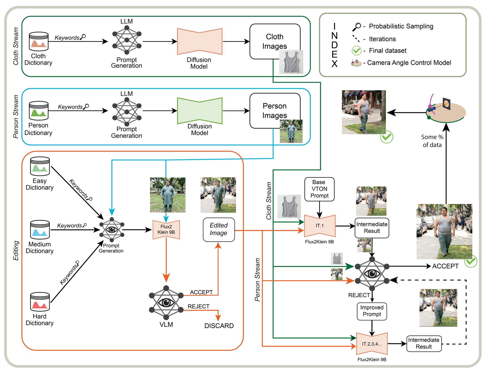
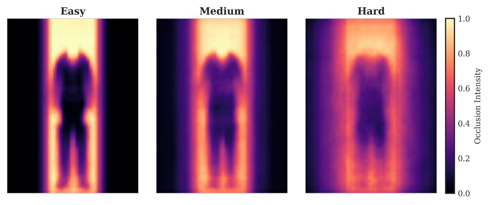
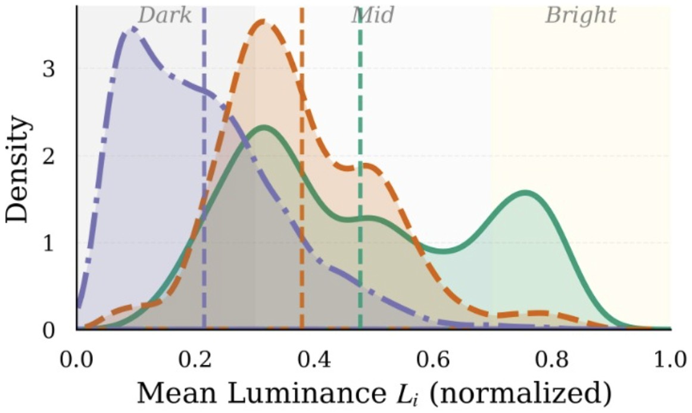
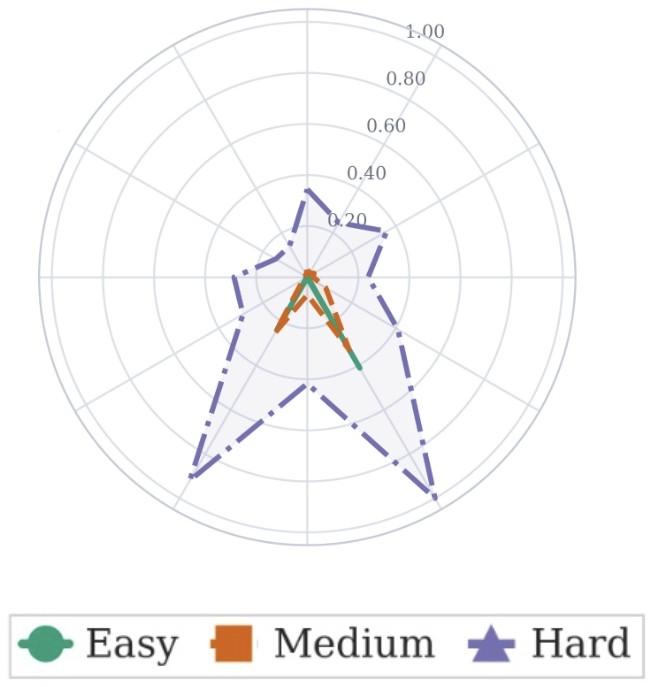
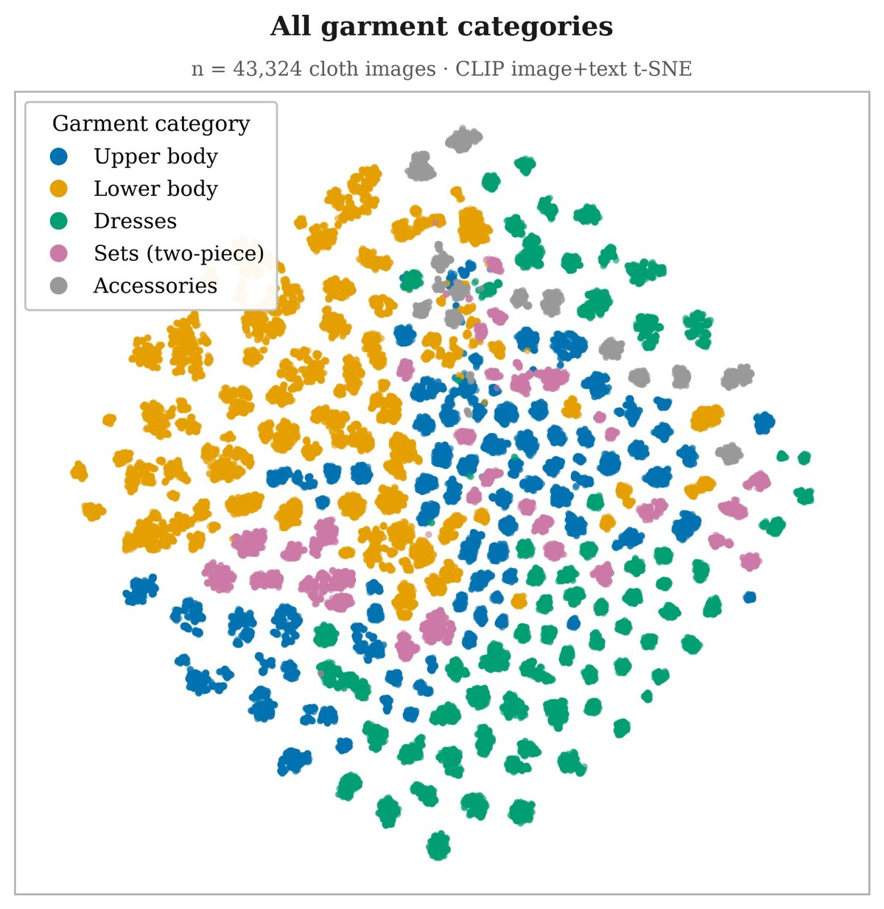
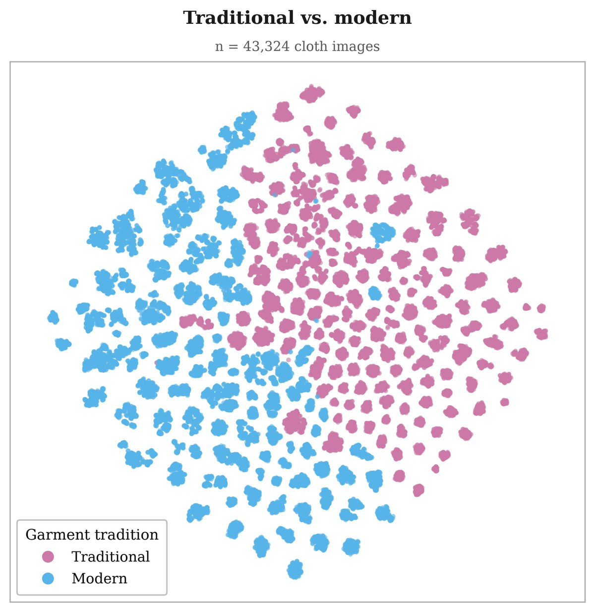
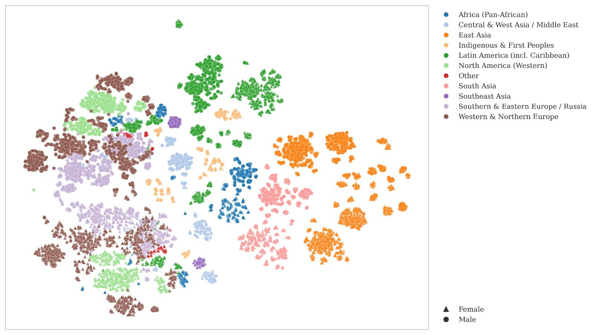

Robust try-on is a data problem, too
Try-on models still break on occlusions, unusual poses and under-represented garments. We argue those failures come as much from dataset coverage as from architecture, and build a dataset to test that.
Training on CURVTON-205K at least halves test-set FID for all three architectures trained on it, e.g. IDM-VTON 17.05 → 8.44, CatVTON 23.85 → 9.14.
Adding CURVTON to real training data lowers StreetTryOn FID for all four architectures, the best FID and KID in every case.
OOTDiffusion trained on CURVTON wins blind pairwise comparisons for try-on quality and realism (20 annotators, six systems).
Abstract
Recent advances in 2D virtual try-on (VTON) have largely focused on architectural innovation, yet robust performance in diverse real-world conditions remains challenging. We argue that failure modes in VTON, such as inaccurate occlusion handling, unconstrained poses, and poor coverage of under-represented garments and appearance factors, are tightly coupled to dataset design choices and long-tail data regimes. We present a scalable data generation pipeline that coordinates specialized editing and generation models with vision-language model (VLM) guidance to synthesize triplets without requiring parsing masks or dense-pose annotations.
Using this pipeline, we create CURVTON-205K, a curated synthetic dataset of 205K triplets: source person, target garment, and corresponding try-on image. CURVTON-205K is explicitly designed to broaden coverage across garments, person appearance, poses, occlusions, and visual conditions. Additionally, it is organized into three difficulty tiers, enabling controlled evaluation under varying levels of difficulty and supporting difficulty-aware experimentation. We analyze the dataset diversity and demonstrate its potential to improve try-on fidelity across four VTON architectures and its cross-dataset generalization.
Four streams, one closed loop
Garments, people and difficulty edits are generated separately, then merged into try-on triplets that a VLM checks and sends back for regeneration until they pass. A learned filter does the final cut.
Show the original pipeline figure from the paper (Fig. 2)

The VLM loop removes most artifacts
When Qwen3-VL 32B rejects a try-on, the failure reason is written back into the prompt and the image is regenerated, up to four times. On hard samples the artifact rate falls from 60% to 5%.
Artifact rate by refinement round
Before try-on, the generated people and garments themselves carry 17/25/35% artifacts (easy/medium/hard), cut to 3/4.4/5.7% by a separate VLM filter.
Does it depend on the models?
Table 7 is a separate small-scale screening run, so its rates differ from the full-dataset run in Table 6 (e.g. hard 66→14% here vs 60→5% there). The drop holds for every generator–evaluator pair, and Qwen3-VL (which sees the whole triplet) beats PaliGemma (which sees only the output).
Easy, medium, hard, by design
Each source person is edited with tier-specific instructions that raise pose deviation, occlusion, clutter and viewpoint change: 100K edited people per tier. Tiers let you see where a model breaks, not just its average.
Easy tier
Bars compare the three tiers on each measure; the selected tier is highlighted. ↓ marks a measure where lower means more difficult (less of the person visible).
Where the difficulty comes from



Broader than existing try-on data
CURVTON-205K is the only dataset in our comparison that is mask-free, in-the-wild, paired, difficulty-tiered and diverse in both garments and people.
Diversity coverage: Limited = neither garment nor person-appearance diversity is explicitly targeted, Moderate = one of the two, Broad = both. All listed datasets are public except WildVTON.
Task-free diversity, dimension by dimension
Same task, very different pictures
Representative person images from each dataset (paper Figs. 21–26). Existing benchmarks are mostly frontal studio shots of Western garments.
Who is in the data
Person prompts sample body shape, geographic and cultural style cues, accessories, visible disabilities and assistive devices, background and photographic style (50% studio, 50% in-the-wild) from a factorized distribution, so the long tail does not collapse. Hover to pause.



Embedding-space coverage
CLIP t-SNE of the 43,324 garment images: upper-body, lower-body, dress, set and accessory items spread across the map instead of collapsing into a few modes.
Paper Fig. 6. Projections are visual summaries of coverage, not quantitative metrics.
What training on CURVTON-205K buys you
We train or fine-tune representative VTON models on CURVTON-205K, then test them in-domain, on standard real benchmarks, and in the wild.
Zero-shot vs trained on CURVTON-205K
More uniform across garment types
UB/LB = upper/lower body, G = full-body garments, Tr/NTr = traditional/non-traditional. Hard stays the hardest tier after training, so the tiers remain informative. A shorter range bar means the model is about equally good on traditional, full-body and Western garments.
Does it transfer to real benchmarks?
No ground truth: raters and automatic metrics both favour CURVTON training
Human preference: share of blind pairwise votes from 20 annotators using the paper's 10-question rubric, normalized to 100% per criterion. CLIP-I measures garment–image alignment; VLM is the visual-consistency score from a VLM evaluator.
Easy → hard ordering helps
FID on the selected test split. Introducing harder tiers gradually is better at every budget, most clearly on the hard split with little compute.
Which tiers to train on?
Darker = higher FID (worse). Each single tier transfers poorly to the others; using all three tiers at full scale is best on every split.
Browse the sample split
Hover a card to see the source person; clickTap a card to open the side-by-side comparison. Garments span 200 types across many cultures.
Download CURVTON-205K
Hosted on Hugging Face as six tar archives (difficulty × presentation), about 108 GB in total, plus a small sample split you can browse without downloading everything.
Load the sample split
from huggingface_hub import snapshot_download # sample split only (remove allow_patterns for all) path = snapshot_download( repo_id="curvton2/curvton2", repo_type="dataset", allow_patterns="sample_dataset/*", )
License: CC BY-NC 4.0 plus the FLUX.2 [klein] 9B non-commercial terms. For research use; not for identity, biometric or surveillance applications.
Layout after extraction
easy/ medium/ hard/ └── female/ male/ ├── cloth_image/ # in-shop garment I_c ├── initial_person_image/ # source person I_p └── tryon_image/ # try-on target I_t # matching names pair a triplet (sample split shown) initial_person_image/fh_000007_e03.png cloth_image/fh_000007_e03_fc_009678_uyghur_atlas_dress.png tryon_image/fh_000007_e03_fc_009678_uyghur_atlas_dress.png
Code for the generation pipeline, the tier editing dictionaries, evaluation scripts and diversity metrics: github.com/curvton/CURVTON-205K_CODE.
What CURVTON-205K is not
Synthetic, not real
The data may miss real camera characteristics, garment materials, lighting and person–garment interactions. CURVTON complements in-domain real supervision; it does not replace it (real-only training still wins paired metrics on VITON-HD and DressCode).
Occasional attribute drift
In a small fraction of cases, fine details such as pockets or buttons are not exactly preserved, more often in the hard tier where reconstruction is inherently ambiguous.
Not a demographic census
Coverage of styles, appearances and settings is broad but not exhaustive. Our diversity analyses describe visual and embedding coverage, not demographic or cultural fairness.
BibTeX
@misc{bartaula2026curvton205k,
title = {{CURVTON-205K}: A Mask-Free Difficulty-Stratified Synthetic
Dataset for Robust and Scalable Virtual Try-On},
author = {Bartaula, Dipan and Shrestha, Anuj and Belbase, Ankit and
Bishwakarma, Anish and Poudel, Saroj and Ghimire, Samip and
Bhatta, Shashank and Arazo, Eric and Bhattarai, Binod},
year = {2026},
note = {arXiv preprint}
}